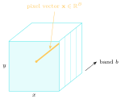

values that samples the spectral signature of its ground cell.
values that samples the spectral signature of its ground cell.Model
for .
- Multispectral: –15, bands of 30–200 nm placed in atmospheric windows and on key features (red, NIR, SWIR). Example: Landsat TM, Sentinel-2 (13 bands).
- Hyperspectral (imaging spectrometers, since the 1980s): –400 contiguous bands of ~10 nm over 0.4–2.5 µm (AVIRIS, PRISMA). Fine sampling of the signature allows identifying materials (minerals, pigments) and estimating physical parameters, at the cost of huge data volumes, redundancy between bands and lower SNR per band.
Picture

 , and the band ; each pixel is a vector .
, and the band ; each pixel is a vector .Two spatial axes and one spectral axis; a pixel is a line through the cube.
Worked example
A scene: Sentinel-2-like with 13 bands at 12 bits: bits ≈ 19.5 MB; PRISMA-like with 240 bands at 12 bits: 360 MB for the same area. A Gaussian classifier needs parameters per class: 104 for 13 bands, 29 160 for 240 — the root of the Hughes phenomenon.
Intuition
A colour photo has three bands; a hyperspectral image is a photo with a spectrometer behind every pixel.
Pitfall
More bands do not automatically give better classification: with few training samples, high dimensionality makes estimates unreliable (Hughes phenomenon), so feature selection or extraction is needed.